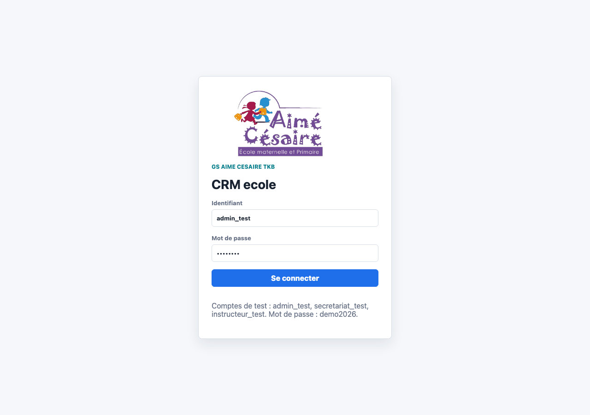
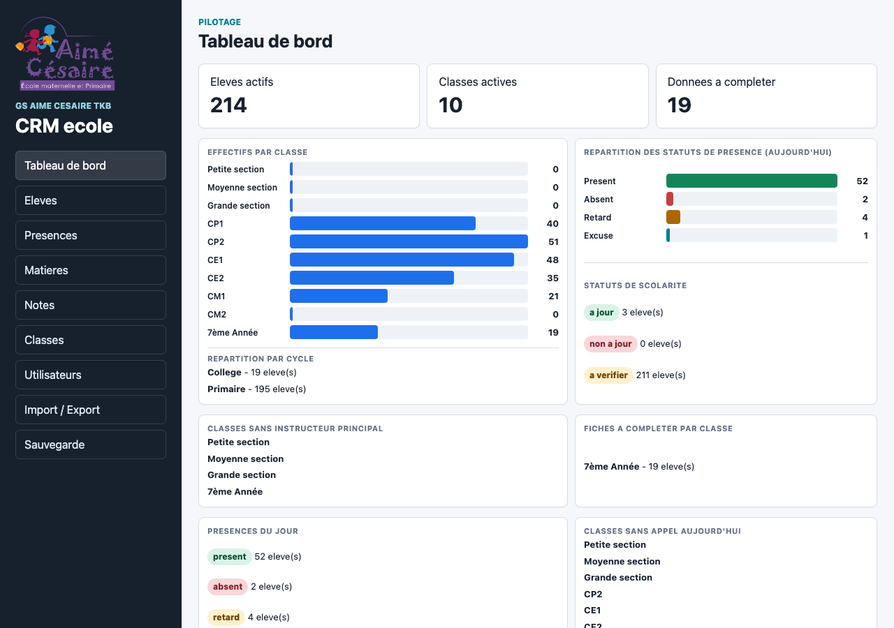
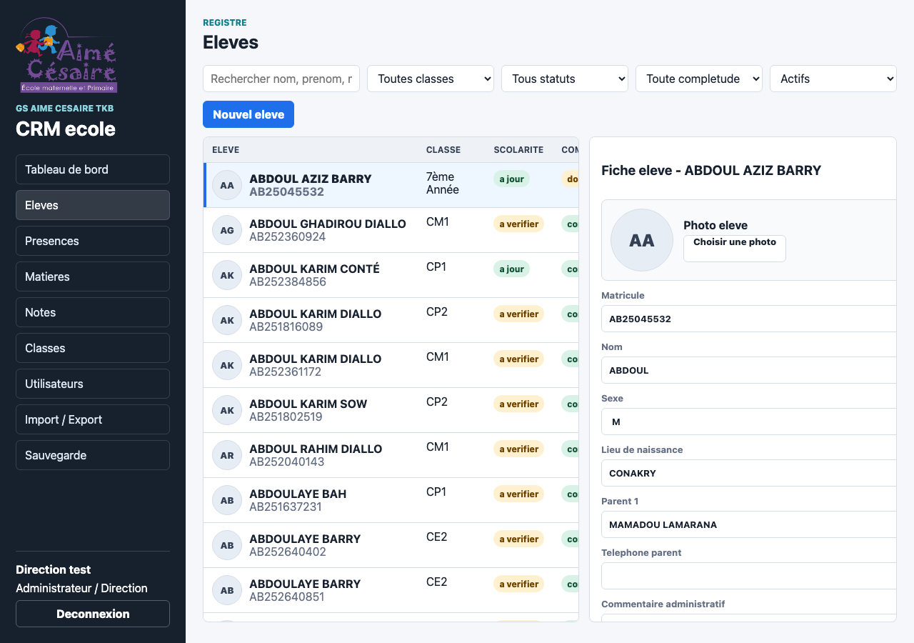
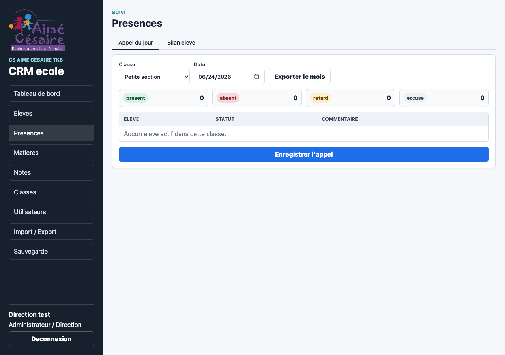
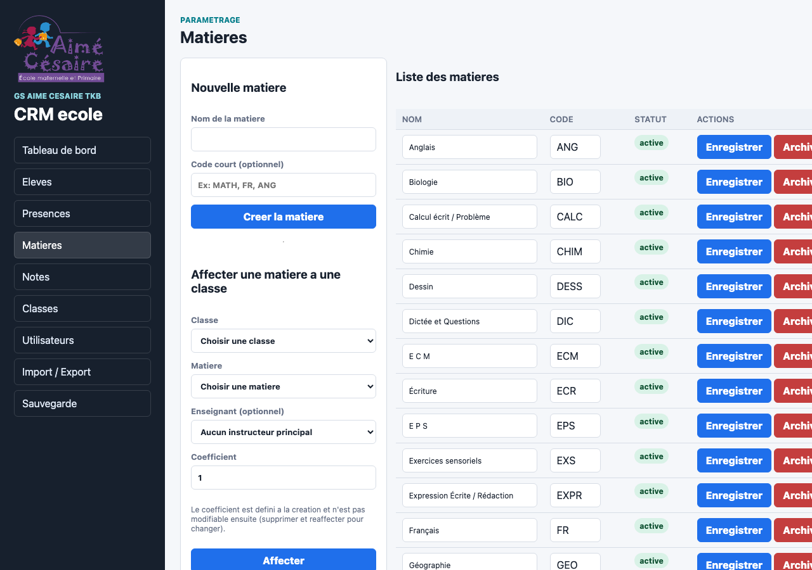
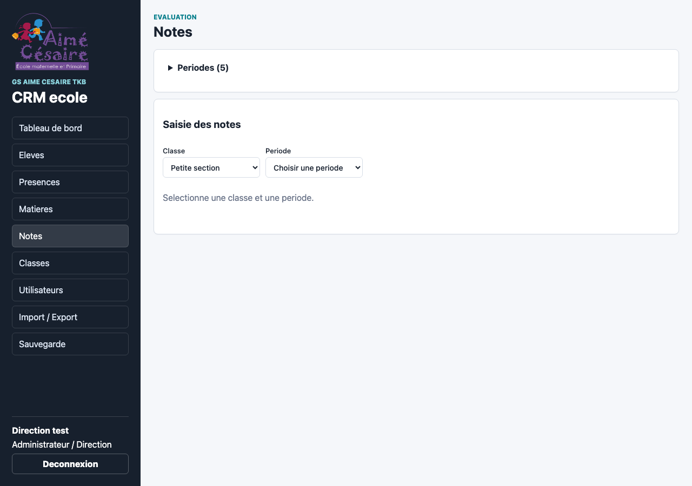
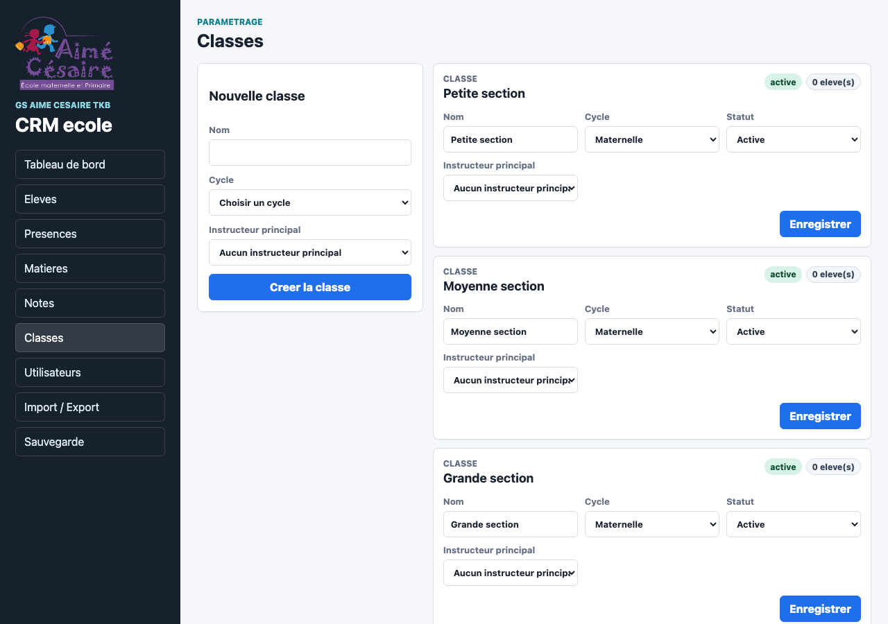
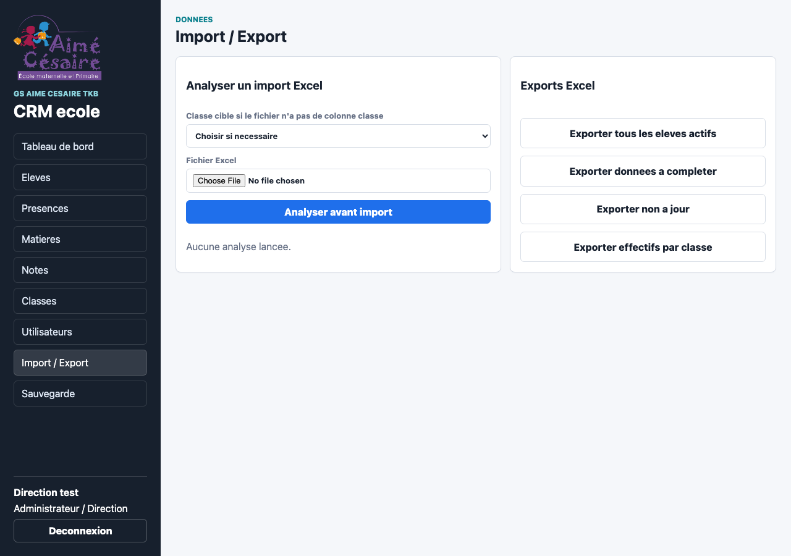
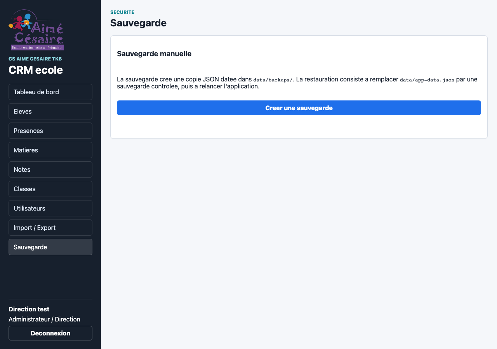

Guide utilisateur du CRM ecole
Ce guide explique comment utiliser le CRM pas a pas, sans connaissance informatique. Il suit les menus visibles dans l'application.
Objectif du guide
Le CRM sert a centraliser les informations essentielles des eleves : classe, parents, statut de scolarite, presences, notes, bulletins, commentaires internes, import Excel, exports et sauvegardes.
Retrouver un eleve, gerer sa fiche, faire l'appel, suivre les presences, saisir les notes, editer des bulletins (individuels ou par classe), exporter et sauvegarder.
Le CRM ne gere pas les paiements complets, la comptabilite ou les emplois du temps. Il fournit un statut simple de scolarite.
Demarrer le CRM
Sur Mac
- Ouvrir le dossier du CRM.
- Si c'est la premiere utilisation, double-cliquer sur
INSTALLER_PACKAGES_CRM_MAC.command. - Double-cliquer sur
LANCER_CRM_MAC.command. - Le navigateur s'ouvre sur l'adresse locale du CRM.
Depuis un autre appareil (telephone, tablette)
- Connecter l'appareil au meme Wi-Fi que la machine serveur.
- Lancer le CRM avec
LANCER_CRM_RESEAU_MAC.commandsur le Mac serveur. - Reperer l'adresse affichee (ex :
http://192.168.1.25:8791). - Ouvrir cette adresse dans le navigateur de l'appareil.
Ne pas fermer la fenetre Terminal pendant l'utilisation. Le mode reseau local est reserve au reseau de l'ecole, ne pas exposer sur Internet.
Connexion
Affiche un ecran de connexion. L'utilisateur saisit son identifiant et son mot de passe, puis clique sur Se connecter.
admin_test / demo2026 (administration)
secretariat_test / demo2026 (secretariat)
instructeur_test / demo2026 (instructeur)

Ecran de connexion : saisir identifiant et mot de passe.
Roles utilisateurs
| Role | Droits |
|---|---|
| Administrateur / Direction | Gestion des utilisateurs, classes, eleves, notes, presences, matieres, exports, sauvegardes, bulletins. |
| Secretariat | Gestion des eleves, classes, notes, presences, matieres, import/export, bulletins. |
| Instructeur | Appel des presences de sa classe, saisie des notes de ses matieres, consultation eleves. Pas d'import/export, pas de modification administrative. |
Menu Tableau de bord
Vision rapide de la situation generale : nombre d'eleves, classes actives, fiches a completer.
Indicateurs
- Effectifs par classe : graphique a barres horizontales.
- Repartition par cycle : Maternelle, Primaire, College.
- Presences du jour : graphique des statuts (present, absent, retard, excuse).
- Statuts de scolarite : nombre d'eleves a jour, non a jour, a verifier.
- Classes sans instructeur principal : classes a completer.
- Fiches a completer : eleves avec champs manquants.
- Classes sans appel aujourd'hui : rappel.
- Moyennes generales par classe : charge automatiquement depuis les notes.
- Derniere sauvegarde : date de la derniere sauvegarde effectuee.

Tableau de bord : indicateurs generaux, effectifs, presences, moyennes.
Menu Eleves
Rechercher, creer, consulter et modifier les fiches eleves. La liste est a gauche, la fiche detaillee a droite (scroll independant).
Rechercher
Utiliser la barre de recherche (nom, prenom, matricule, classe). Filtrer par statut, completude, classe. Basculer entre actifs et archives.
Creer un eleve
- Cliquer sur Nouvel eleve.
- Remplir au minimum le nom et la classe.
- Completer les informations (prenom, sexe, date/lieu naissance, parents, telephone).
- Choisir le statut de scolarite (a jour, non a jour, a verifier).
- Cliquer sur Creer l'eleve.
Fiche eleve detaillee
La fiche affiche toutes les informations. Plusieurs sections repliables :
- Presences recentes : les 6 derniers enregistrements (absent, retard, excuse).
- Notes : notes par periode avec moyennes si des notes existent.
- Appreciation bulletin : champ de saisie pour le commentaire qui apparaitra sur le bulletin.
- Commentaires internes : suivi interne, non visible sur les exports standards.
Imprimer une fiche eleve
Ouvrir la fiche, cliquer sur Imprimer la fiche. La version imprimee masque la navigation et les formulaires.

Menu Eleves : liste a gauche, fiche detaillee a droite.
Menu Presences
Sous-menu avec deux onglets : Appel du jour et Bilan eleve.
Faire l'appel
- Cliquer sur Presences.
- Choisir la classe et la date (date du jour par defaut).
- Pour chaque eleve, choisir le statut : present, absent, retard ou excuse.
- Ajouter un commentaire court si necessaire.
- Cliquer sur Enregistrer l'appel.
Le resume en haut du panneau affiche les compteurs par statut.
Bilan eleve
- Cliquer sur l'onglet Bilan eleve.
- Choisir la classe, l'eleve, et la periode (date debut et date fin).
- Le tableau affiche uniquement les absences et retards (par defaut l'eleve est present).
- Les totaux sont calcules automatiquement (absences, retards, excuses).
- Exporter le bilan individuel en Excel si besoin.
Exporter les presences
La direction et le secretariat peuvent exporter le suivi mensuel depuis l'ecran d'appel (bouton Exporter le mois).

Menu Presences : appel du jour et resume des statuts.
Menu Matieres
Gerer les matieres enseignees et les affecter aux classes avec coefficient et instructeur.
Creer une matiere
- Cliquer sur Matieres.
- Saisir le nom (ex :
Francais) et un code court (ex :FR). - Cliquer sur Creer la matiere.
Affecter une matiere a une classe
- Dans la section Affecter une matiere a une classe, choisir la classe et la matiere.
- Renseigner le coefficient :
- Primaire : coefficient verrouille a 1.
- College : coefficient modifiable (2 pour le Francais par defaut).
- Choisir un enseignant (optionnel).
- Cliquer sur Affecter.
Pour changer un coefficient, il faut supprimer l'affectation et la recreer.
Voir les affectations par classe
La section Affectations par classe liste toutes les matieres de chaque classe avec leur coefficient et instructeur. Possibilite de modifier l'instructeur directement depuis cette liste, ou de retirer une affectation.

Menu Matieres : creer, affecter aux classes, gerer les coefficients.
Menu Notes
Saisir les notes des eleves, gerer les periodes, consulter les moyennes et exporter.
Periodes
Les periodes representent l'annee scolaire :
Primaire : 3 trimestres.
College : 2 semestres.
Un administrateur peut generer les periodes en un clic : Notes > Generer les periodes.
Chaque periode peut etre ouverte (saisie autorisee) ou fermee (notes bloquees).
Saisir une note
- Cliquer sur Notes.
- Choisir la classe et la periode.
- Le tableau affiche les eleves en lignes et les matieres en colonnes.
- Pour chaque note :
- Choisir le type d'evaluation (Mensuelle, Trimestrielle, Semestrielle).
- Saisir la note (sur 10 pour le Primaire, sur 20 pour le College).
- Cliquer sur + pour ajouter.
Upsert : si la meme combinaison (eleve, matiere, periode, type d'evaluation) existe deja, la note est ecrasee.
Moyennes automatiques
Les moyennes sont calculees automatiquement :
- Moyenne par matiere : somme des notes / nombre de notes, multipliee par le coefficient.
- Moyenne generale : somme des moyennes ponderees / somme des coefficients.
- Classement : les eleves sont classes du meilleur au moins bon.
Les matieres sans note ne sont pas comptees dans la moyenne generale.
Exporter les notes
Depuis l'ecran Notes, la direction et le secretariat peuvent exporter les notes d'une classe pour une periode au format Excel.

Menu Notes : saisie des notes par classe et periode.
Bulletins
Deux facons d'editer un bulletin : individuel ou par classe.
Bulletin individuel
- Ouvrir la fiche d'un eleve (Eleves).
- Cliquer sur le bouton Bulletin (orange).
- Choisir la periode dans la boite de dialogue.
- Le bulletin s'affiche en version imprimable avec :
- En-tete de l'etablissement.
- Tableau des matieres : note, coefficient, moyenne de l'eleve.
- Moyenne generale et classement.
- Resume des absences/retards/excuses sur la periode.
- Appreciation et recommandations (saisie dans la fiche eleve).
- Bareme.
- Utiliser Ctrl+P / Cmd+P pour imprimer ou sauvegarder en PDF.
Bulletins par classe
- Aller dans Notes, choisir la classe et la periode.
- Cliquer sur le bouton Bulletins classe (orange).
- Les bulletins se generent les uns apres les autres.
- Utiliser Ctrl+P / Cmd+P pour imprimer la selection.
Appreciation bulletin
Dans la fiche eleve, sous les notes, il y a un champ Appreciation bulletin. Ce texte apparait automatiquement sur son bulletin. Chaque instructeur peut le renseigner depuis la fiche de l'eleve.
Exporter les bulletins en Excel
Depuis l'ecran Notes, le bouton Exporter les notes (Excel) produit un fichier avec les notes, moyennes, coefficients, classement et absences. Utilisable pour les releves de notes.

Menu Classes : creer et gerer les classes.
Menu Classes
Creer les classes, choisir leur cycle et rattacher un instructeur principal.
- Cliquer sur Classes.
- Saisir le nom (ex :
7eme A). - Choisir le cycle : Maternelle, Primaire, College.
- Choisir un instructeur principal si deja cree.
- Cliquer sur Creer la classe.
Archiver une classe permet de ne plus l'utiliser sans perdre l'historique.

Menu Utilisateurs : creer les comptes et gerer les roles.
Menu Utilisateurs
Reserve a l'administrateur. Creer les comptes et choisir les roles.
- Cliquer sur Utilisateurs.
- Saisir un identifiant (sans espace, ex :
sekou_admin). - Saisir le nom affiche (ex :
Sekou Camara). - Choisir le role.
- Saisir un mot de passe.
- Cliquer sur Creer l'utilisateur.
Creer d'abord les instructeurs, puis les classes, pour pouvoir rattacher l'instructeur principal des la creation de la classe.

Menu Import / Export : analyser avant d'importer.
Menu Import / Export
Importer une liste d'eleves depuis Excel et exporter des listes.
Importer
- Cliquer sur Import / Export.
- Si le fichier n'a pas de colonne classe, choisir une classe cible.
- Choisir le fichier Excel.
- Cliquer sur Analyser avant import.
- Lire le resume (lignes importables, bloquees).
- Si correct, cliquer sur Confirmer l'import partiel.
Exporter
Boutons d'export disponibles : liste des eleves actifs, fiches a completer, eleves non a jour, effectifs par classe.

Menu Sauvegarde : creer une copie de securite.
Menu Sauvegarde
L'administrateur peut creer une copie de securite. Le CRM cree aussi une sauvegarde automatique au premier demarrage de chaque jour.
Quand sauvegarder
- Avant un import Excel important.
- Apres une grosse session de saisie.
- Avant de copier le dossier CRM.
La date de la derniere sauvegarde est visible sur le Tableau de bord.
Workflow conseille : demarrer une nouvelle annee
- Verifier le CRM. Ouvrir, se connecter, consulter le tableau de bord.
- Creer les utilisateurs. Aller dans Utilisateurs, creer les comptes.
- Creer les classes. Aller dans Classes, creer les classes et rattacher les instructeurs.
- Creer les matieres et les affecter. Aller dans Matieres, creer les matieres et les affecter aux classes avec coefficients.
- Importer les eleves ou les saisir. Utiliser Import / Export ou Eleves.
- Generer les periodes. Aller dans Notes > Generer les periodes.
- Faire l'appel quotidien. Aller dans Presences.
- Saisir les notes. Aller dans Notes, choisir la classe et la periode.
- Editer les bulletins. Individuels ou par classe, avec appreciations.
- Sauvegarder. Aller dans Sauvegarde.
Bonnes pratiques
- Sauvegarder avant un import important.
- Utiliser les filtres pour les fiches incompletes.
- Archiver plutot que supprimer.
- Creer un compte nominatif par utilisateur.
- Fermer la fenetre Terminal pendant l'utilisation.
- Partager le meme compte.
- Confirmer un import sans verifier le resume.
- Modifier les fichiers dans
data/.
Depannage simple
| Probleme | Action |
|---|---|
| Le CRM ne s'ouvre pas. | Relancer le script de lancement. |
| Node.js manque. | Lancer le script d'installation des packages. |
| Erreur de connexion. | Verifier que la fenetre Terminal est ouverte. |
| Eleve introuvable. | Retirer les filtres, verifier le filtre Actifs/Archives. |
| Import bloque beaucoup de lignes. | Lire les messages, corriger le fichier Excel. |
| Notes non visibles. | Verifier que la periode est ouverte et que la classe/eleve ont des matieres affectees. |
| Bulletin vide. | Verifier que l'eleve a des notes et des absences pour la periode selectionnee. |
Maintenance du guide
Ce guide doit rester aligne avec le CRM. A chaque evolution, verifier les sections concernees.
- Si un menu change, mettre a jour la section correspondante.
- Si un workflow change, actualiser l'exemple de workflow.
- Si un ecran change, refaire les captures.